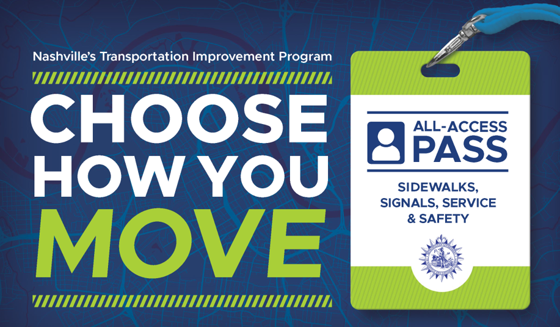
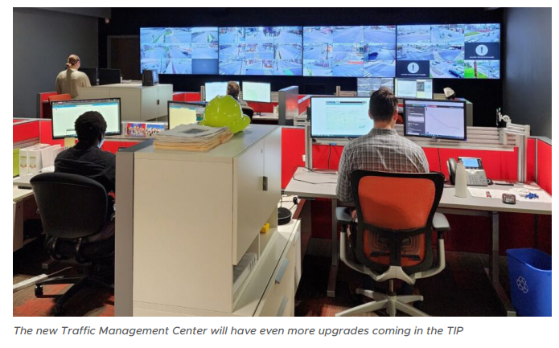
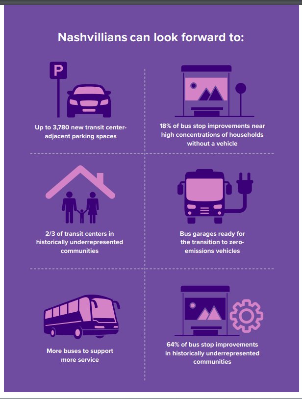
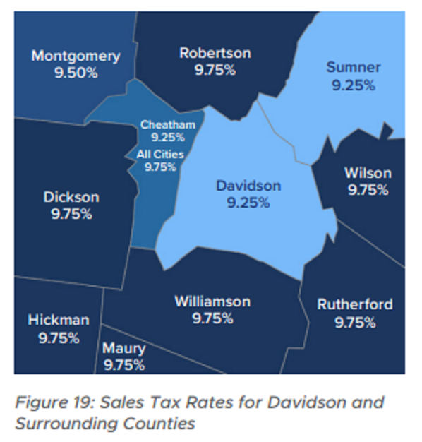
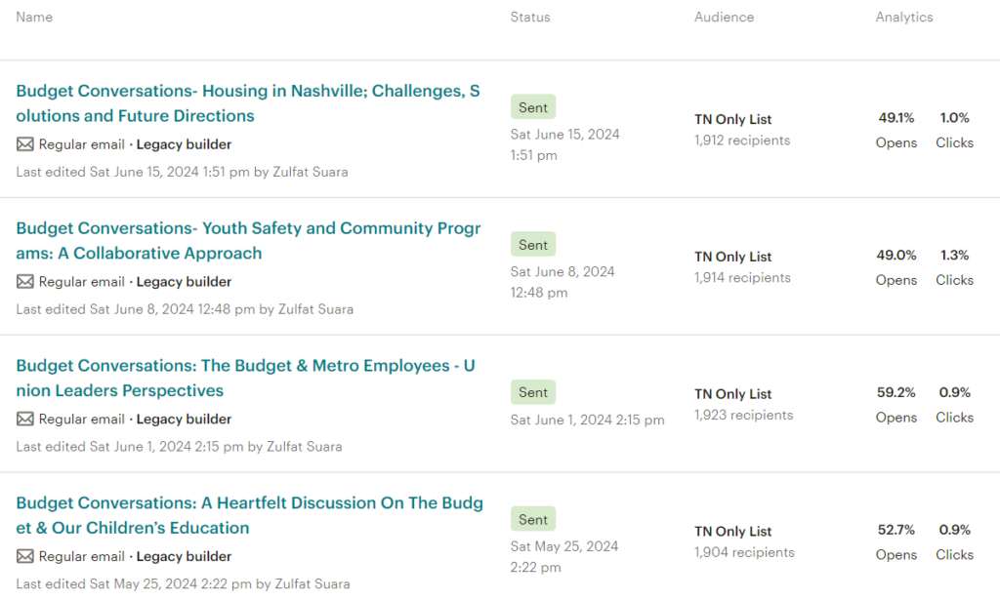

Let’s Talk Transit!!!!
I hope you all had a wonderful Independence Day celebration with family and friends. Let us continue to do our part in protecting our democracy and ensuring equality, liberty, and justice for us all. I also pray for freedom for all those that are in bondage and for those that are being driven from their homes, all around the world. As Nelson Mandela says, “For to be free is not merely to cast off one’s chains, but to live in a way that respects and enhances the freedom of others.”
For my last budget conversations for the FY25 budget, I wanted to talk about another issue that is of importance to our residents – transportation. Recently, this issue has been at the forefront of our community’s concerns, with many residents experiencing the challenges of our inadequate infrastructure firsthand. According to recent surveys, Nashvillians overwhelmingly agree that we need to address these issues to improve our quality of life. This issue is crucial because transportation affects every aspect of our daily lives, from commuting to work to accessing essential services.
Choose How You Move
For this conversation, I am joined by Mr. Michael Briggs with Mayor O’Connell’s transit team. Michael is a senior transportation planner with over 15 years of experience in urban development. He has been instrumental in designing and implementing transportation plans in several major cities. Michael brings a wealth of knowledge on how to create efficient and accessible transit systems.
Today, we will be discussing the mayor’s “Choose How You Move” program, a comprehensive plan aimed at revamping our transportation infrastructure. This transportation improvement plan is designed to enhance accessibility, safety, and efficiency across Nashville.

The Four S of the Transportation Improvement Program (TIP)
Sidewalk Infrastructure
The first key aspect of the Choose How You Move program is the enhancement of our sidewalk infrastructure. The plan will add or upgrade 86 miles of sidewalks, focusing primarily on main corridors like Dickerson Road, Nolensville Road, and Murfreesboro Pike. This extensive network will ensure safer pedestrian routes and better access to public transit. Michael Briggs highlighted the importance of this initiative: “By completing the priority sidewalk network, we’re not just improving walkability; we’re also making it safer for residents to access bus stops and other transit options.”
Traffic Signal Upgrades
Next, the program includes the modernization of nearly 600 traffic signals across the city. This upgrade will enhance our traffic management capabilities, reduce congestion, and improve safety. Updating our traffic signals to a more adaptive system will significantly reduce wait times and improve traffic flow. It’s about making our streets smarter and more responsive to real-time conditions. The program includes upgrades to the new fully integrated traffic management center (TMC). The center will allow for real time connections and adjustments to traffic signals. The center will be aware of any faulty signal and can repair remotely or deploy crew immediately. The new system also allows for traffic signals to be adapted to peak hours and emergencies, making the roadway more reliable for all users.

Addressing Safety Needs
Safety is a paramount concern. Many streets in Nashville are challenging to navigate due to inadequate lighting and crosswalks. The program aims to improve these conditions by upgrading infrastructure in high-risk areas. The program also focuses on investing in community programs that promote transit use and pedestrian safety. For instance, the plan includes educational campaigns to encourage safe walking and cycling practices. By informing the public about safe practices and the benefits of using public transit, we can foster a culture of safety and sustainability. Michael Briggs pointed out, “Improving safety features like lighting and crosswalks not only protects pedestrians but also encourages more people to walk, knowing they’re safer.”
Enhanced Transit Services
An integral part of the plan is expanding and enhancing current transit services. This includes extending bus service to 24 hours a day on major corridors and introducing new crosstown routes to serve more areas of the county. Reliable and frequent transit services are essential for reducing car dependency. By offering 24/7 service, we’re ensuring that all residents, including those working night shifts or irregular hours, have access to public transit. For the first time in its history, Nashvillians will have a 24/7/365 access to public transportation.
Addressing transportation issues also involves tackling root causes like poverty and lack of access to affordable housing. By improving transportation options, we’re providing residents with better access to job opportunities and essential services. Transportation equity is about more than just buses and sidewalks; it’s about ensuring every resident has the opportunity to thrive.
Essential Components of the New Bus Services
The goal of the enhances bus system is to ensure short wait time for riders. This will be accomplished through frequent service network, express buses routes, extension of current routes as well as connector routes. Essential part of bus service program include:
- All Access Corridors-Include a high-frequency bus line with strategically located dedicated transit-only lanes, ensuring increased service reliability for passengers Include frequent transit on Nashville most frequently travelled corridors.
- Bus Stop Upgrades– The plan includes upgrades to 285 bus stops based on need.
- Transit Centers– The program includes 12 transit centers across the city to allow for easy bus transfers form one area of town to the other. The programs proposes 5 different types of centers – Downtown Transit Centers, Neighborhood Transit Centers, On Street Transit Centers, Regional Transit Canters and an upgrade to the Airport Transit Center.
- Park and Ride Facilities– The Transportation Improvement Program proposes to fund park and ride facilities along 10 major pikes

Q & A
What is the cost to residents?
The Improving Manufacturing, Public Roads, and Opportunities for a Vibrant Economy (IMPROVE) Act signed into law in 2017 allows local government to establish a dedication sources of funding for transit. Following a local referendum, counties with populations over 112,000 and cities with more than 165,000
people may levy a surcharge on top of several current local taxes, including the sales tax, business tax, motor vehicle tax, and rental car tax.
The funding mechanism chosen for the Nashville Transpiration Improvement Program is the local option sales tax. The proposal will increase the sales tax from 9.25% to 9.75%. The expected cost of the half a penny increase in sales tax for most households is about $6 more per month. As Michael Briggs explained, “The sales tax increase is minimal compared to the benefits of improved transportation infrastructure, which can significantly reduce personal transportation costs.”
The new rate will put Nashville at the same level as surrounding counties while generating about $150M in revenue every year. Creating this dedicated sources of funding would provide the matching funds needed to leverage over $1.4 billion in future federal dollars to invest in transportation and improve access over the next 15 years.

How will the program address current traffic issues?
Improving traffic flow is a major goal. The upgraded traffic signals and expanded bus services are designed to reduce congestion. By optimizing traffic signals and providing reliable public transit, we can alleviate some of the pressure on our roads, making commutes faster and less stressful.
How do we ensure that access for our residents with disabilities and those with language barrier?
All of the buses have ramps and have the ability to be lowered for those in wheelchairs. The buses also have visual cues at the top about the time and where the bus is, and audio cues about the routes for our residents with auditory or visual impairments. The bus stop improvement also has yellow or truncated mats, to aid our citizens who are visually impaired when crossing the street.
Language access is also a critical component. We’re ensuring that all communication about the program is available in multiple languages. The one-pager is translated into Spanish, Arabic, Kurdish, Somali, and Burmese. The day-to-day services have transitioned from blue to purple with no words but an image. The signs at the bus stops also have a QR code that will take riders to the website with more language translations. According to Michael, the team continues to work with community organizations to provide translations and ensure that non-English speaking residents are fully informed and can benefit from the program.
How can residents find out the projects in their neighborhoods?
The interactive map on the Nashville.gov website provide detailed information about planned improvements, allowing residents to see how their neighborhoods will benefit from the program.
Will the program prioritize Nolensville Pike?
Nolensville Pike is one of the busiest transit corridors with a very large ridership. Unfortunately, the current plan has Nolensville scheduled towards the end of the program. If bus ridership is integral to this program, does it not make sense to prioritize areas where people already use the bus, like Nolensville, Dickerson, and Murfreesboro?
According to Michael Briggs, Nolensville is in the conceptual framework because it is a very important corridor. However, there is already work underway on Murfreesboro from the past administration, and there are conversations about putting Gallatin at the top of the list. The team has not gone back to the community on the other corridors. Since the program schedule is not set in stone, it is still subject to change based on input from community members, and Nolensville could be moved up.
Next Step- Residents Vote
The Transportation Improvement Plan is now before the Metro Council for approval. Once approved by the Council, the referendum will be placed on the November 5 ballot where residents will decide. Nashville is growing and that growth has led to congestion and traffic. The Choose How You Move program has the potential to profoundly impact our community. Improved transportation infrastructure will reduce commute times, enhance safety, and provide better access to essential services. For example, residents in underrepresented neighborhoods will benefit from increased investment in sidewalks and safer transit options.
If you missed this important conversation, you can watch the entire episode at the link below. You can also find out more information about the Nashville Transportation Improvement Plan here.
FY25 Budget Conversations Recap
This is my last Budget Conversations for the FY25 budget season. I want to thank all my guests/panelists, as well as everyone that joined us on Facebook. These conversations serve as my way of informing our residents. By providing the budget in layman terms to allow for transparency and hopefully a trust in government. It is also an opportunity for me to learn about what is important to our residents. Thanks to your input, I have been able to advocate for many adjustments to the budget through my wish list.
Below are the links to this years budget conversations
DISSECTING MAYOR O’CONNELL’S FY 25 BUDGET
A HEARTFELT DISCUSSION ON THE BUDGET & OUR CHILDREN’S EDUCATION
THE BUDGET & METRO EMPLOYEES – UNION LEADERS PERSPECTIVES
YOUTH SAFETY AND COMMUNITY PROGRAMS: A COLLABORATIVE APPROACH
HOUSING IN NASHVILLE: CHALLENGES, SOLUTIONS, AND FUTURE DIRECTIONS
Thanks to you all, my budget conversations newsletter has an average of 51% open rate. With almost 2,000 subscribers, this means between 900-1,100 of you read my weekly newsletters. Your continued engagement is a motivation for me. Thank you!

Thank you for your continued support. I urge you to continue to stay engaged and share your thoughts and ideas about the budget and other important issues facing our city. Your input is invaluable. Together, we can ensure a bright and sustainable future for our great city.
Best,
Zulfat